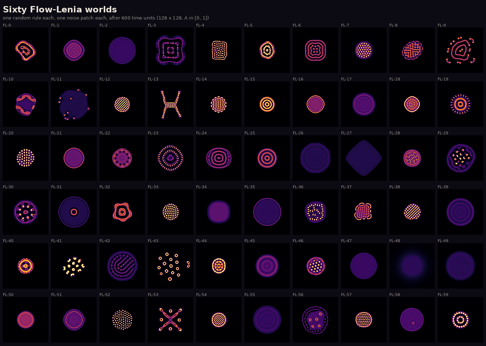
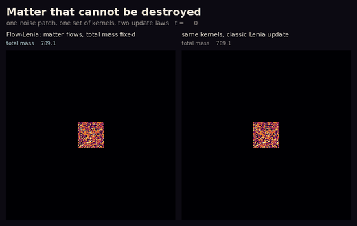

East wing · Other laws of physics · Room 10
Matter that cannot be destroyed
In classic Lenia a cell's value goes up or down, so matter appears and disappears. In Flow-Lenia (Plantec and colleagues, with Chan, 2023) the same field only says where matter wants to go, and matter flows there. Nothing is made or lost. We wrote our own Flow-Lenia from the paper and drew sixty random rules.

A colony of ring cells

What you see. With conservation, the patch splits into separate ring cells that spread out and keep their distance. Without it, the same patch grows without limit into a maze.
What the ledger says. The number of cells follows the mass: about one cell per 58 units, from 4 cells to 57, in 20 runs C064observed. Without conservation the mass grows 21-fold C065observed. Here, conservation is what makes individuals.